Primer automóvil de la historia
Proyecto de programación sobre la evolución y tecnología en los autos modernos.
Los automóviles han cambiado mucho a lo largo de la historia gracias a los avances de la tecnología. Antes los autos eran simples máquinas que solo servían para transportarse, pero hoy en día incluyen computadoras, sensores y conexión a internet.
Actualmente existen muchos tipos de tecnología en los autos como los sistemas de seguridad inteligentes, navegación GPS, sensores de estacionamiento y pantallas digitales dentro del vehículo.
Estos avances permiten que conducir sea más seguro, cómodo y eficiente.
El primer automóvil fue inventado a finales del siglo XIX. Desde entonces la industria automotriz ha evolucionado constantemente.
Al principio los autos utilizaban motores muy simples y eran lentos. Con el paso del tiempo se desarrollaron motores más potentes y eficientes.
En el siglo XXI comenzaron a aparecer nuevas tecnologías como los autos eléctricos, híbridos y autónomos.
Primer automóvil de la historia
Los autos eléctricos son uno de los avances más importantes de la tecnología automotriz moderna.
Estos vehículos funcionan con baterías recargables en lugar de gasolina, lo que ayuda a reducir la contaminación del aire.
Empresas como Tesla han impulsado mucho el desarrollo de este tipo de autos.
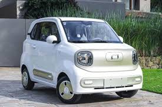
Ejemplo de un auto eléctrico moderno
Uno de los avances más sorprendentes en la tecnología automotriz son los autos autónomos. Estos vehículos pueden conducirse solos utilizando sensores, cámaras y programas de computadora que analizan el entorno.
Los autos autónomos utilizan inteligencia artificial para tomar decisiones como frenar, acelerar o cambiar de carril.
Empresas como Tesla, Google y otras compañías tecnológicas están trabajando en el desarrollo de este tipo de automóviles.
El objetivo principal de esta tecnología es reducir los accidentes de tránsito, ya que muchos accidentes ocurren por errores humanos.
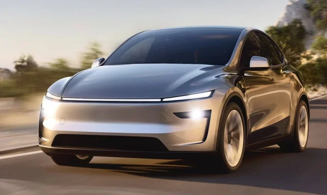
Auto autónomo desarrollado por empresas tecnológicas
Actualmente los autos incluyen muchas tecnologías que antes no existían. Estas tecnologías hacen que la conducción sea más segura y cómoda.
Algunos autos modernos incluso pueden conectarse a internet para actualizar su software o mostrar información del tráfico en tiempo real.
Existen diferentes tipos de automóviles dependiendo de la tecnología que utilizan.
| Tipo de auto | Combustible | Contaminación | Tecnología |
|---|---|---|---|
| Gasolina | Gasolina | Alta | Básica |
| Híbrido | Gasolina y electricidad | Media | Intermedia |
| Eléctrico | Batería | Baja | Avanzada |
La siguiente imagen cambia cuando pasas el mouse sobre ella. Esto se conoce como efecto "rollover".
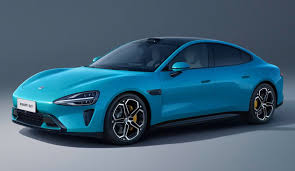
Pasa el mouse sobre la imagen para ver el cambio
La tecnología en los automóviles no solo busca hacer los autos más rápidos, sino también más seguros y eficientes.
Gracias a los sensores y sistemas de seguridad, hoy en día muchos autos pueden detectar obstáculos, frenar automáticamente o alertar al conductor si existe algún peligro en la carretera.
Además, los autos eléctricos ayudan a reducir la contaminación ambiental, lo cual es muy importante para el futuro del planeta.
En los próximos años es muy probable que los autos autónomos y eléctricos se vuelvan más comunes en las ciudades.
Esto cambiará la forma en que las personas se transportan diariamente.
La historia de los automóviles está llena de avances tecnológicos importantes. A continuación se muestra una línea del tiempo con algunos momentos clave en la evolución de los autos.
| Año | Avance tecnológico | Impacto |
|---|---|---|
| 1886 | Primer automóvil de gasolina | Inicio de la industria automotriz |
| 1908 | Producción en masa | Autos accesibles para más personas |
| 1950 | Dirección asistida | Conducción más fácil |
| 1980 | Sistemas electrónicos | Mayor control del vehículo |
| 2000 | GPS integrado | Mejor navegación |
| 2010 | Autos eléctricos | Reducción de contaminación |
| 2020 | Autos autónomos | Conducción automatizada |
La seguridad es una de las áreas donde más se han desarrollado los avances automotrices.
Los autos modernos incluyen sistemas diseñados para prevenir accidentes y proteger a los pasajeros.
Los sensores permiten que el automóvil detecte objetos, distancias y condiciones del entorno.
Estos sensores ayudan al vehículo a tomar decisiones para mejorar la seguridad.
La inteligencia artificial es una tecnología que permite a las computadoras aprender y tomar decisiones.
En los autos modernos, la inteligencia artificial se utiliza para analizar información de cámaras y sensores.
Esto permite que los autos autónomos puedan conducir sin intervención humana.
Aunque esta tecnología todavía está en desarrollo, muchos expertos creen que será muy común en el futuro.
Los avances tecnológicos han cambiado la forma en que las personas se transportan.
Hoy en día los autos son más seguros, más eficientes y más cómodos que en el pasado.
Además, la tecnología ha permitido desarrollar sistemas de transporte más inteligentes en las ciudades.
Esto incluye aplicaciones de movilidad, autos eléctricos y nuevas formas de transporte sostenible.
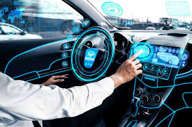
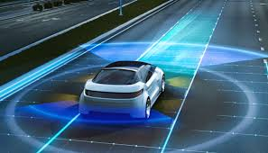
Estos vehículos representan algunos de los avances más importantes de la tecnología automotriz moderna.
La tecnología ha transformado completamente la industria automotriz.
Desde los primeros autos con motores simples hasta los vehículos eléctricos y autónomos, el progreso ha sido muy grande.
En el futuro, es probable que los autos sean cada vez más inteligentes y ecológicos.
Esto ayudará a mejorar la seguridad vial y a reducir la contaminación ambiental.
En los últimos años la tecnología ha avanzado muy rápido y ha permitido crear automóviles con funciones que antes parecían imposibles.
Muchos autos modernos utilizan computadoras internas para controlar diferentes sistemas del vehículo.
Estas computadoras ayudan a mejorar el rendimiento del motor, la seguridad y la eficiencia del combustible.
Además, algunos autos pueden conectarse a internet y recibir actualizaciones de software.
Estas innovaciones permiten que los autos modernos sean más seguros y eficientes que los vehículos tradicionales.
| Tecnología | Descripción | Beneficio |
|---|---|---|
| Autos autónomos | Vehículos que pueden conducirse solos | Reducir accidentes |
| Baterías avanzadas | Baterías con mayor capacidad | Mayor autonomía |
| Comunicación entre autos | Vehículos que comparten información | Mayor seguridad vial |
| Uso de hidrógeno | Autos que funcionan con hidrógeno | Energía limpia |
| Conectividad total | Autos conectados a internet | Mayor comodidad |
La historia de los automóviles tiene muchos datos interesantes.
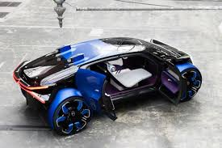
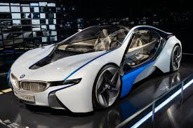
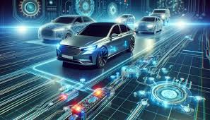
Estos autos muestran cómo la tecnología continúa avanzando en la industria automotriz.
Muchos automóviles modernos incluyen sistemas inteligentes que ayudan al conductor.
Estos sistemas utilizan sensores, cámaras y computadoras para analizar el entorno.
Estos avances ayudan a reducir accidentes y mejorar la seguridad en las carreteras.
Los autos eléctricos se están volviendo cada vez más populares en todo el mundo.
Muchos gobiernos están apoyando el desarrollo de estos vehículos para reducir la contaminación.
Las baterías modernas permiten que algunos autos eléctricos puedan recorrer cientos de kilómetros con una sola carga.
Esto demuestra que la tecnología automotriz seguirá evolucionando en los próximos años.
Los científicos y los ingenieros continúan investigando nuevas formas de mejorar los automóviles.
Algunas de estas investigaciones incluyen nuevas fuentes de energía, materiales más ligeros y sistemas de conducción más inteligentes.
Todo esto permitirá que los autos del futuro sean más seguros, eficientes y sostenibles.
La evolución de los automóviles no se detiene.
Cada año aparecen nuevas tecnologías que transforman la forma en que las personas se transportan.
En el futuro podrían existir ciudades con autos completamente autónomos y sistemas de transporte totalmente inteligentes.
La investigación y el desarrollo tecnológico continúan avanzando constantemente.
Los autos eléctricos son uno de los avances más importantes en la tecnología automotriz. Estos vehículos funcionan con baterías recargables en lugar de gasolina o diésel. Esto ayuda a reducir la contaminación y el consumo de combustibles fósiles.
Muchas empresas automotrices están invirtiendo en el desarrollo de autos eléctricos. Algunas marcas importantes en esta tecnología son Tesla, Nissan, BMW, Toyota y Chevrolet.
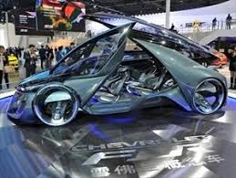
El Tesla Model S es uno de los autos eléctricos más famosos del mundo. Fue desarrollado por la empresa Tesla y es conocido por su gran autonomía y tecnología avanzada.
Ventajas de los autos eléctricos:
Sin embargo, todavía existen algunos retos como el precio de las baterías y la necesidad de más estaciones de carga.
| Tipo de auto | Combustible | Contaminación | Ejemplo |
|---|---|---|---|
| Gasolina | Gasolina | Alta | Toyota Corolla |
| Híbrido | Gasolina y electricidad | Media | Toyota Prius |
| Eléctrico | Electricidad | Baja | Tesla Model 3 |
Los autos autónomos son vehículos que pueden conducirse solos sin la intervención de una persona. Esto es posible gracias a sensores, cámaras, inteligencia artificial y software avanzado.
Las empresas tecnológicas y automotrices están trabajando en esta tecnología. Algunas de ellas son Google, Tesla y Mercedes-Benz.
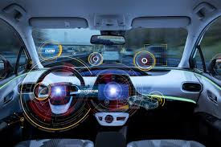
Los autos autónomos utilizan diferentes tipos de sensores como:
Estos sensores permiten al vehículo detectar obstáculos, peatones, otros autos y señales de tránsito.
El objetivo de esta tecnología es reducir accidentes y mejorar la seguridad vial.
En el futuro los autos serán cada vez más inteligentes y eficientes. Muchas empresas están desarrollando nuevas tecnologías para mejorar la movilidad y reducir el impacto ambiental.
Algunas tecnologías que veremos en el futuro son:
También se espera que las ciudades tengan más infraestructura para autos eléctricos como estaciones de carga rápida.
La tecnología automotriz seguirá evolucionando en los próximos años y cambiará la forma en que nos transportamos.
Si quieres aprender más sobre tecnología automotriz puedes visitar los siguientes enlaces:
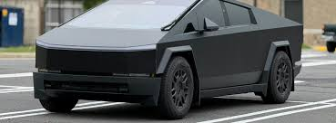
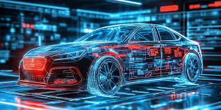
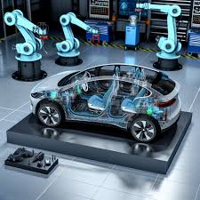
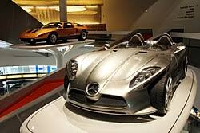
Esta galería muestra algunos ejemplos de autos modernos que utilizan tecnología avanzada.
La tecnología automotriz es muy importante porque permite mejorar la seguridad, la eficiencia y el impacto ambiental de los vehículos.
Gracias a los avances tecnológicos los autos actuales tienen mejores sistemas de frenado, sensores de seguridad y asistencia al conductor.
Muchos autos modernos incluyen sistemas como:
Todos estos avances ayudan a que la conducción sea más segura y cómoda.